ImageMagick で GIF の形式を変換
GIF は同じように見える画像でも、バイナリ的に色んな形式やメタデータで表現できます。ImageMagick でそれらの形式に変換する方法を並べてみます。
インターレースGIF
$ convert Opaopa.png -interlace GIF Opaopa-interlace.gif
ピクセルの並ぶ順番
- 8行ごとに1行
- 4行ごとに1行
- 2行ごとに1行
- 残り全部
という順でピクセルを保存する事で、ネットワークが遅い場合でもはじめに全体像を表示してから、データが取得しながら少しずつ細部を表示できます。
| ピクセル | 実際の表示 |
|---|---|
| 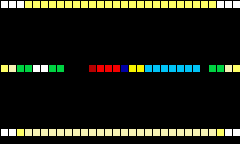 | 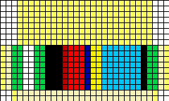 |
| 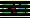 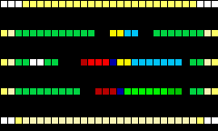 | 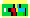 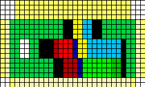 |
| 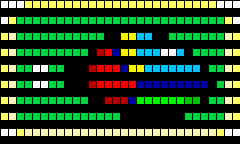 | 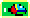 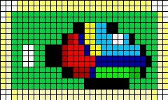 |
| 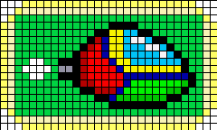 |
ちなみに上記画像は ImageMagick で以下のように生成できます。(-fx オプション便利！)
インターレースのフェーズ別画像
$ convert Opaopa-dot1.png -filter Point -fx "!(j%8)*u" Opaopa-dot1-interlace-1.png $ convert Opaopa-dot1.png -filter Point -fx "!(j%4)*u" Opaopa-dot1-interlace-2.png $ convert Opaopa-dot1.png -filter Point -fx "!(j%2)*u" Opaopa-dot1-interlace-3.pngフェーズ別画像ピクセル補完あり
convert Opaopa-dot1.png -filter Point -fx "p{i,j-j%8}" Opaopa-dot1-interlace-1-cmpl.png convert Opaopa-dot1.png -filter Point -fx "p{i,j-j%4}" Opaopa-dot1-interlace-2-cmpl.png convert Opaopa-dot1.png -filter Point -fx "p{i,j-j%2}" Opaopa-dot1-interlace-3-cmpl.pngドット絵風の拡大画像
$ convert Opaopa-dot1-interlace-1.png -filter Point -resize 800% -fx "(i%8>0)*(j%8>0)*u" Opaopa-dot8-interlace-1.png ＜略＞
ポジション指定
GIF は描画場所の Screen と実際に描画する Image の位置を別に持つので、その描画場所を指定できます。
$ convert Opaopa.png -page +50+30 Opaopa-posi.gif
$ identify Opaopa-posi.gif
Opaopa-posi.gif GIF 120x72 120x72+50+30 8-bit sRGB 16c 999B 0.000u 0:00.000
| 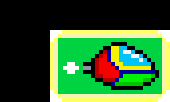 |
上記の画像は table タグの中に入れてますが、(50,30) から描画されます。(ブラウザによって微妙に表示が変わります)
透明色
インデックスの一つを透明色として扱えます。尚、半透明は扱えません。
$ convert Opaopa.png -transparent "#00d342" Opaopa-transparent.gif
アニメーションGIF
各コマの画像を作って convert で繋いで作成できます。
$ convert Opaopa-anime-dot1-[0-7].png Opaopa-anime-dot1.gif
$ for n in `seq 0 7`
do convert Opaopa-anime-dot1-$n.png -filter Point -resize 800% -fx "(i%8>0)*(j%8>0)*u" Opaopa-anime-dot8-$n.png
done
$ convert Opaopa-anime-dot8-[0-7].png Opaopa-anime-dot8.gif
Delay
-delay オプションでコマ間の時間を指定できます。1/100 単位なので、例えば -delay 100 を指定すると 1 frame/sec です。
$ convert -delay 100 Opaopa-anime-dot8.gif Opaopa-anime-dot8-delay100.gif
$ convert -delay 25 Opaopa-anime-dot8.gif Opaopa-anime-dot8-delay25.gif
(-delay を入力画像より前に置かないと反映されない事に注意)
ループ回数
例えば、ループ回数に 1 を指定すると、ループしない GIF アニメが作れます。
$ convert -delay 50 -loop 1 Opaopa-anime-dot8.gif Opaopa-anime-dot8-loop1.gif
{kind=link}
↑ クリックして開けます
Global or Local ColorMap
ImageMagick のコマンドで Global と Local を判別する方法が分からないので、giftext を使ってみます。giflib もしくは giflib-tools でコマンドをインストール出来ます。1
$ convert Opaopa-anime-dot8-[0-7].png Opaopa-anime-dot8.gif
$ giftext Opaopa-anime-dot8.gif | grep "Color Map"
Has Global Color Map.
No Image Color Map.
No Image Color Map.
No Image Color Map.
No Image Color Map.
No Image Color Map.
No Image Color Map.
No Image Color Map.
No Image Color Map.
Image Has Color Map.
今回は１コマ目で使う色パレットで、残り全部のコマの色を表現できるので Global Color Map １つのみになります。途中のコマで色が増える場合は Local Color Map が生成されます。
尚、Local Color Map があるけど全部消したい場合、+map オプションを使う事で、全コマの Color Map を Global Color Map にまとめられます。2
Optimize
GIF アニメーションには dispose メソッドというものがあり、透明ピクセルの場合に前のコマの色をそのまま使う事ができます。逆にいうと前のコマで透明じゃないピクセルを透明ピクセルに変えられなうなるのですが、それがデメリットになる事は殆どないでしょう。
最適化手法のうち２種類を紹介して、最後にそれらを両方適用する方法も紹介します。
OptimizeFrame
変化のあるピクセルを全部囲う四角(いわゆる Dirty Rectangle)でクロップした画像を持つ事で、GIF のデータサイズを減らせます。
$ convert Opaopa-anime-dot1.gif -layers OptimizeFrame Opaopa-anime-dot1-optframe.gif
% identify -format "size=%wx%h geom:%g\n" Opaopa-anime-dot1-optframe.gif
size=41x18 geom:41x18+0+0
size=15x5 geom:41x18+4+7
size=14x7 geom:41x18+3+6
size=8x7 geom:41x18+6+6
size=8x7 geom:41x18+6+6
size=5x3 geom:41x18+5+8
size=15x3 geom:41x18+4+8
size=16x5 geom:41x18+3+7
コマを分解します。
$ convert Opaopa-anime-dot1-opttrans.gif Opaopa-anime-dot1-opttrans-%d.png
| 元画像 | フレーム最適化 |
|---|---|
| 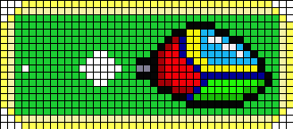 | 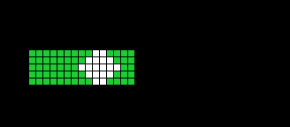 |
| 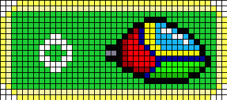 | 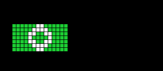 |
| 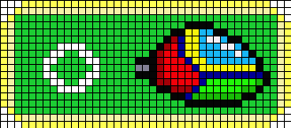 | 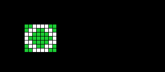 |
| 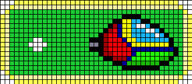 | 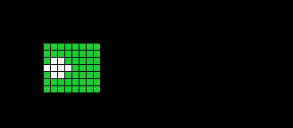 |
＜以下 5-7 は省略＞
Optimize Transparency
$ convert Opaopa-anime-dot8.gif -layers OptimizeTransparency Opaopa-anime-dot8-opttrans.gif
コマを分解します。
$ convert Opaopa-anime-dot1-opttrans.gif Opaopa-anime-dot1-opttrans-%d.gif
| 元画像 | 透明最適化 |
|---|---|
＜以下 5-7 は省略＞ (分かりやすくする為に透明部を黒にしてます) １つ前のコマと色が変わらないピクセルを透明にする事で、色数を減らして圧縮の効率が上がるのが期待出来ます。
尚、透明にするだけで画像のクリップはしません。
$ identify -format "size=%wx%h geom:%g\n" Opaopa-anime-dot1-opttrans.gif
size=41x18 geom:41x18+0+0
size=41x18 geom:41x18+0+0
size=41x18 geom:41x18+0+0
size=41x18 geom:41x18+0+0
size=41x18 geom:41x18+0+0
size=41x18 geom:41x18+0+0
size=41x18 geom:41x18+0+0
size=41x18 geom:41x18+0+0
(最強の) Optimize
それらが合わさり最強になった Optimize がこれです。
$ convert Opaopa-anime-dot1.gif -layers Optimize Opaopa-anime-dot1-optimize.gif
分解します。
| 元画像 | 最適化 |
|---|---|
|  | |
|  | |
＜以下 5-7 は省略＞
見た目は透明Optimizeと同じですが、画像のサイズがフレーム最適化と同様小さくなっています。
% identify -format "size=%wx%h geom:%g\n" Opaopa-anime-dot1-optimize.gif
size=41x18 geom:41x18+0+0
size=15x5 geom:41x18+4+7
size=14x7 geom:41x18+3+6
size=8x7 geom:41x18+6+6
size=8x7 geom:41x18+6+6
size=5x3 geom:41x18+5+8
size=15x3 geom:41x18+4+8
size=16x5 geom:41x18+3+7
とりあえず GIF 画像のサイズを減らしたい場合には -layers optimize 指定するのがお勧めです。
参考 URL
- ImageMagick v6 Examples – Animation Optimization
- 公式ページでは giftrans を使って説明してます > http://www.imagemagick.org/Usage/anim_opt/#colortables [return]
- たしか大昔、Local ColorMap を読まないガラケー端末があって +map が必須だった時代があったかも。。 [return]